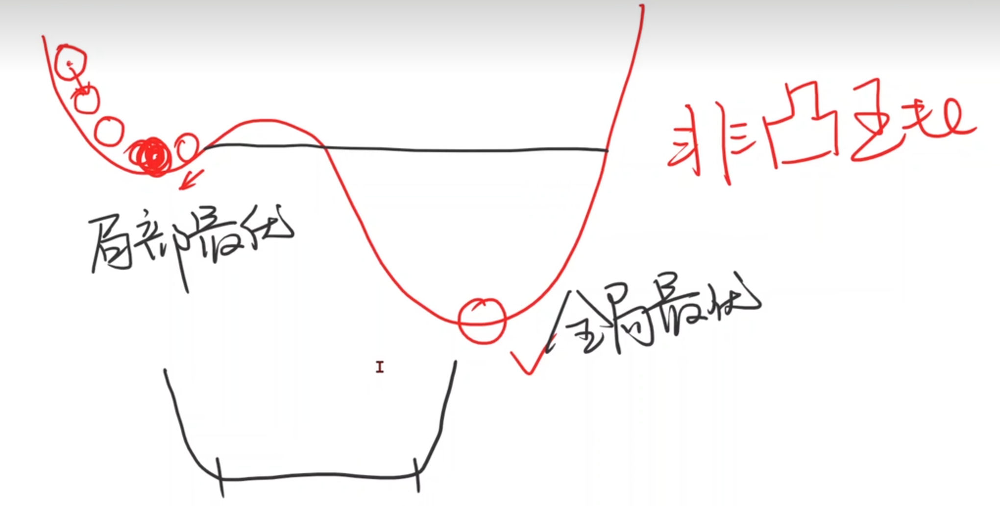
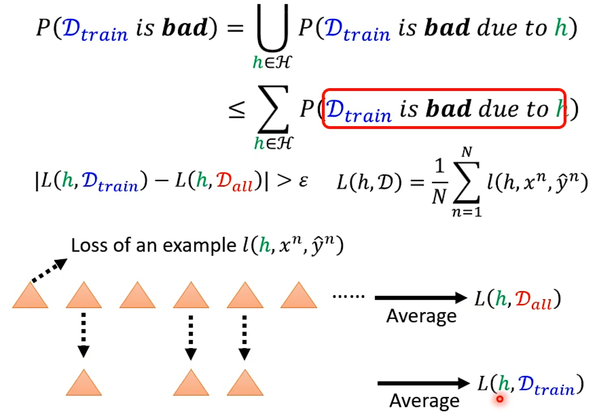
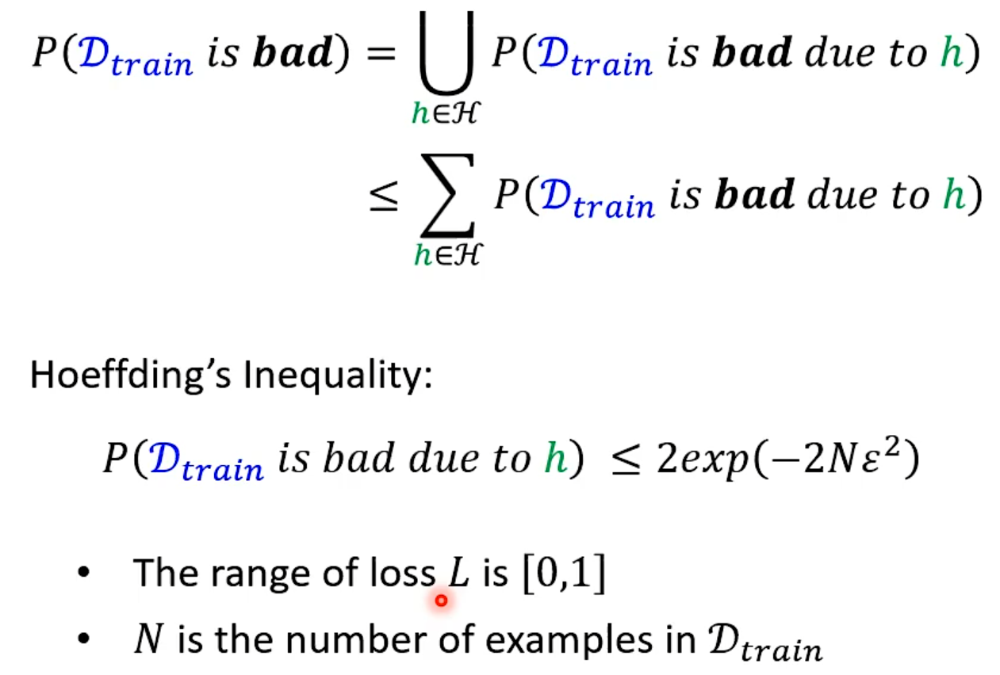
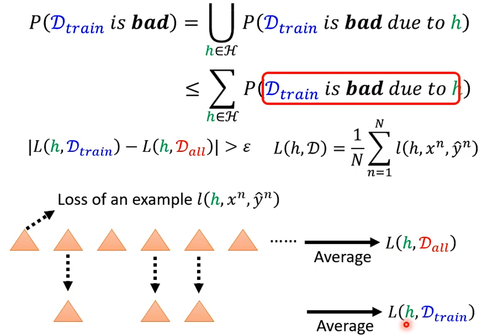
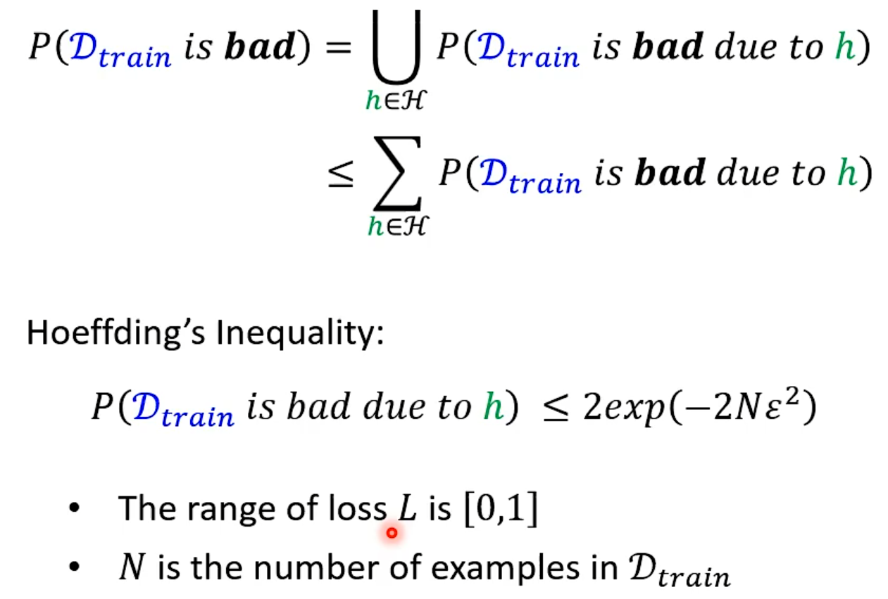

Python
Python内置函数
enumerate()函数
enumerate() 函数用于将一个可遍历的数据对象(如列表、元组或字符串)组合为一个索引序列，同时列出数据和数据下标，一般用在 for 循环当中。
1 | |
参数
- sequence – 一个序列、迭代器或其他支持迭代对象。
- start – 下标起始位置的值。
返回值
返回 enumerate(枚举) 对象。
Python面向对象
类(class):
用来描述具有相同属性和方法的集合。定义了该集合中每个对象所共有的属性和方法。对象是类的实例。
###类对象
类对象支持两种操作：属性引用和实例化。
属性引用使用和 Python 中所有的属性引用一样的标准语法：obj.name。
类对象创建后，类命名空间中所有的命名都是有效属性名。所以如果类定义是这样:
1 | |
##类属性与方法
类的私有属性：__private_attrs：两个下划线开头，声明该属性为私有，不能在类的外部被使用或直接访问。在类内部的方法中使用时 self.__private_attrs。
1 | |
###类的方法：
在类的内部，使用 def 关键字来定义一个方法，与一般函数定义不同，类方法必须包含参数 self，且为第一个参数，self 代表的是类的实例。
self 的名字并不是规定死的，也可以使用 this，但是最好还是按照约定使用 self。
类的私有方法
__private_method：两个下划线开头，声明该方法为私有方法，只能在类的内部调用 ，不能在类的外部调用。self.__private_methods。
1 | |
###类的专有方法

方法：
类中定义的函数。
类有一个名为 __ init __() 的特殊方法（构造方法），该方法在类实例化时会自动调用,
_ _ init_ () 方法可以有参数，参数通过 _ init _() 传递到类的实例化操作上
1
2
3
4
5
6class Complex:
def __init__(self, realpart, imagpart):
self.r = realpart
self.i = imagpart
x = Complex(3.0, -4.5)
print(x.r, x.i) # 输出结果：3.0-4.5self代表类的实例，而非类
- 类的方法与普通的函数只有一个特别的区别——它们必须有一个额外的第一个参数名称, 按照惯例它的名称是 self.
- self 代表的是类的实例，代表当前对象的地址，而 self.class 则指向类。
- self 不是 python 关键字，我们把他换成 runoob 也是可以正常执行的
1
2
3
4
5
6
7class Test:
def prt(self):
print(self)
print(self.__class__)
t = Test()
t.prt()
类的方法：在类的内部，使用 def 关键字来定义一个方法，与一般函数定义不同，类方法必须包含参数 self, 且为第一个参数，self 代表的是类的实例。
1
2
3
4
5
6
7
8
9
10
11
12
13
14
15
16
17
18#类定义
class people:
#定义基本属性
name = ''
age = 0
#定义私有属性,私有属性在类外部无法直接进行访问
__weight = 0
#定义构造方法
def __init__(self,n,a,w):
self.name = n
self.age = a
self.__weight = w
def speak(self):
print("%s 说: 我 %d 岁。" %(self.name,self.age))
# 实例化类
p = people('runoob',10,30)
p.speak()
##类变量：
类变量在整个实例化的对象中是公用的。类变量定义在类中且在函数体之外。类变量通常不作为实例变量使用。
##数据成员：
类变量或者实例变量用于处理类及其实例对象的相关的数据。
##方法重写：
如果从父类继承的方法不能满足子类的需求，可以对其进行改写，这个过程叫方法的覆盖（override），也称为方法的重写。
class Parent: # 定义父类 def myMethod(self): print ('调用父类方法') class Child(Parent): # 定义子类 def myMethod(self): print ('调用子类方法') c = Child() # 子类实例 c.myMethod() # 子类调用重写方法 super(Child,c).myMethod() #用子类对象调用父类已被覆盖的方法子类（派生类 DerivedClassName）会继承父类（基类 BaseClassName）的属性和方法。 BaseClassName（实例中的基类名）必须与派生类定义在一个作用域内。除了类，还可以用表达式，基类定义在另一个模块中时这一点非常有用:1
2
3
4
5
6
7
8
9
10
11
12
13
14
15
16
17
18
19
20
21
22
23
24
[super() 函数](https://www.runoob.com/python/python-func-super.html)是用于调用父类(超类)的一个方法。
##**局部变量：**
定义在方法中的变量，只作用于当前实例的类。
##**实例变量：**
在类的声明中，属性是用变量来表示的，这种变量就称为实例变量，实例变量就是一个用 self 修饰的变量。
##**继承：**
即一个派生类（derived class）继承基类（base class）的字段和方法。继承也允许把一个派生类的对象作为一个基类对象对待。例如，有这样一个设计：一个Dog类型的对象派生自Animal类，这是模拟"是一个（is-a）"关系（例图，Dog是一个Animal）。
- 派生类
```python
class DerivedClassName(BaseClassName):
<statement-1>
.
.
.
<statement-N>1
class DerivedClassName(modname.BaseClassName):1
2
3
4
5
6
7
8
9
10
11
12
13
14
15
16
17
18
19
20
21
22
23
24
25
26
27
28
29
30#类定义
class people:
#定义基本属性
name = ''
age = 0
#定义私有属性,私有属性在类外部无法直接进行访问
__weight = 0
#定义构造方法
def __init__(self,n,a,w):
self.name = n
self.age = a
self.__weight = w
def speak(self):
print("%s 说: 我 %d 岁。" %(self.name,self.age))
#单继承示例
class student(people):
grade = ''
def __init__(self,n,a,w,g):
#调用父类的构函
people.__init__(self,n,a,w)
self.grade = g
#覆写父类的方法
def speak(self):
print("%s 说: 我 %d 岁了，我在读 %d 年级"%(self.name,self.age,self.grade))
s = student('ken',10,60,3)
s.speak()多继承
1
2
3
4
5
6class DerivedClassName(Base1, Base2, Base3):
<statement-1>
.
.
.
<statement-N>需要注意圆括号中父类的顺序，若是父类中有相同的方法名，而在子类使用时未指定，python从左至右搜索 即方法在子类中未找到时，从左到右查找父类中是否包含方法。
1
2
3
4
5
6
7
8
9
10
11
12
13
14
15
16
17
18
19
20
21
22
23
24
25
26
27
28
29
30
31
32
33
34
35
36
37
38
39
40
41
42
43
44
45
46#类定义
class people:
#定义基本属性
name = ''
age = 0
#定义私有属性,私有属性在类外部无法直接进行访问
__weight = 0
#定义构造方法
def __init__(self,n,a,w):
self.name = n
self.age = a
self.__weight = w
def speak(self):
print("%s 说: 我 %d 岁。" %(self.name,self.age))
#单继承示例
class student(people):
grade = ''
def __init__(self,n,a,w,g):
#调用父类的构函
people.__init__(self,n,a,w)
self.grade = g
#覆写父类的方法
def speak(self):
print("%s 说: 我 %d 岁了，我在读 %d 年级"%(self.name,self.age,self.grade))
#另一个类，多重继承之前的准备
class speaker():
topic = ''
name = ''
def __init__(self,n,t):
self.name = n
self.topic = t
def speak(self):
print("我叫 %s，我是一个演说家，我演讲的主题是 %s"%(self.name,self.topic))
#多重继承
class sample(speaker,student):
a =''
def __init__(self,n,a,w,g,t):
student.__init__(self,n,a,w,g)
speaker.__init__(self,n,t)
test = sample("Tim",25,80,4,"Python")
test.speak() #方法名同，默认调用的是在括号中参数位置排前父类的方法
super(student, test).speak()
##实例化：
创建一个类的实例，类的具体对象。
对象：
通过类定义的数据结构实例。对象包括两个数据成员（类变量和实例变量）和方法。
#线性模型
##MSE（平均平方误差 Mean Square Error）

穷举法
#梯度下降算法实践
分治：若是凸函数可用，不是话陷入局部最优
梯度(Gradient):
梯度下降法也会陷入到局部最优，后来在神经网络中发现用梯度下降算法很难陷入局部最优点
非凸函数： 局部最优
鞍点：梯度为0
指数加权均值： Ci是当前损失，C^`^i是更新后损失
训练发散：训练集正确训练后都是收敛的，对于训练发散常见原因是学习率取得太大
随机梯度下降(SGD)
Batch
在梯度下降算法w计算是可以并行的
#Back Propagation 反向传播
Chain Rule 链式法则
前馈
Backward

Pytorch中前馈和反馈计算
tensor:Pytorch中存储数据数据
data grad
用Pytorch实现线性回归
广播机制
affine model 仿射模型
线性单元
列数为维度，loss为标量
定义模型时必须继承自nn.Module类 构造函数：__ init __() 初始化构造对象使用的函数 和 forward()函数 前馈过程中必须使用的函数 必须定义 backward无是因为Module对象会自动求导

torch.nn.Linear(,)构造对象
nn: Neural Network
训练过程
代码
1 | |
逻辑斯蒂回归 分类(classification)
分类问题中输出的是概率
二分类：只有两个类别的分类问题
torchvision
torchvision中有很多数据集
参数train表示想要下载的是训练集还是测试集
##Logistic Function
sigmoid functions

##Logistic Regression Model

Loss function for Binary Classification
此时，我们输出的不在是一个数值而是一个分布
BCE

两个分布间的差异
交叉熵
处理多维特征的输入
行——样本(sample)
列——特征(Feature)
并行计算

构造多层神经网络

加载数据集
Dataset——数据集 索引
DataLoader——Mini Batch
Epoch、Batch-Size、Iterations
Epoch:所有的训练样本进行了一次前向传播和反向传播是1次Epoch
Batch Size : 每次训练所用的样本数量
Iteration:迭代了多少次
shuffle=True 打乱数据集
多分类问题
实现输出分类的要求 大于0 和为1


NLLLoss

1 | |
卷积神经网路 CNN
图片全连接后 可能会丧失一些原有的图片的空间的特征，比如图片中两点列相邻但是全连接后岔开
卷积神经网络将图像按原始空间结构进行保存
输入张量的维度 与 输出张量的维度
Feature Extraction 特征提取器 Classification 分类器
图像是什么？
RGB——
栅格图像 矢量图像


padding

stride 步长
每次索引的坐标+
可有效降低图像的宽度和高度
Max Pooling 最大池化层
分成n*n组，找每组的最大值

减少代码冗余：函数/类
Concatenate：拼接 将张量沿着通道连接
What is 1×1 convolution？
信息融合 改变通道数量


循环神经网络 RNN
DNN：Dense（Deep） 稠密神经网络
RNN：处理具有序列连接的输入数据（例如：金融股市、天气、自然语言处理）
RNN Cell
本质：线形层，把某个维度映射到另一个维度的空间。 Linear


How to use RNNCell


How to use RNN


李宏毅深度学习
##Pytorch Tutorial

###Step1 Load Data
torch.utils.data.Dataset & torch.utils.data.DataLoader
Dataset: stores data samples and expected values 将Python定义class将资料一笔笔读进来打包。
Dataloader: groups data in batches, enables multiprocessing 将Dataset中一个个的资料合并成一个个batch，平行化处理
dataset = MyDataset(file)
dataloader = Dataloader(dataset, batch_size, shuffle = True)
Tensors
- High-dimensional matrices (arrays)
Shape of Tensors
Check with .shape()
Creating tensors

Common operations
Addition
z = x + y
z=torch.add(x,y)
Subtraction
z = x - y
z= torch.sub(x,y)
Power
y = x.pow(2)
Summation
y = x.sum()
Mean
y = x.mean()
Transpose:transpose two specified dimensions
Squeeze
- Unsqueeze
- Cat
- Device
Gradient Calculation
1 | |
###Step 2 Define Neural Network
torch.nn.Module
- Linear Layer(Fully-connected Layer)
- Non-Linear Activation Functions
####Build your own neural network


Step 3 Loss Function
torch.nn.MSELoss
torch.nn.CrossEntropyLoss etc.

Step 4 Optimization Algorithm
Step 5 Entire Procedure


Save/Load Trained Models

Gradient Decent
Backpropagation
Chain Rule
Regression
[Regression李宏毅]:(https://github.com/Fafa-DL/Lhy_Machine_Learning/blob/main/选修 To Learn More/第一节/Regression.pdf)
Step 1 Model

Step2 Goodness of Function

Step3 Best Function


Local minima Global minima
Model Selection

Overfitting: A more complex model does not always lead to better performance on testing data.

[回归 模型选择](https://github.com/Fafa-DL/Lhy_Machine_Learning/blob/main/选修 To Learn More/第一节/Regression.pdf)
Regularization
Redefine Loss function

Smoother：meaning is when the input change, the output change smaller(smooth)
Why we want a smooth function?: If some noises corrupt input xi When testing， a smooth function has less influence.

Classification
Gaussian Distribution


Logistic Regression


Generative model 进行了一定的假设

Multi-class Classfication


Limitation of Logistic Regression
Feature Transformation


General Guidance

Model Bias

OPtimization Issue

Overfitting


Data augmentation 要根据资料特性合理设置


模型选择 有可能恰好模型产生随机全正确


used a validation set, but model still overfitted?


Mismatch

ptimization Fails

local minima
saddle point


Don’t afraid of saddle point


Batch and Momentum
Batch


·Small batch is better on testing data


Momentum


Adptive Learning Rate


在某一个方向上梯度小希望学习率大一些，在某个方向梯度大一些希望学习率小一些

###Root Mean Square


RMSProop


Adam


New Optimizers for Deep Learning
[Lhy_Machine_Learning/Optimization.pdf at main · Fafa-DL/Lhy_Machine_Learning (github.com)](https://github.com/Fafa-DL/Lhy_Machine_Learning/blob/main/选修 To Learn More/第二节/Optimization.pdf)


SGD
SGD with Momentum (SGDM)

Adagraad
RMSProp
Adam


尝试解释为什么Adam和SGDM训练不一样：
Loss Function比较平坦，训练和测试的的Minimum就会比较接近
Simply combine Adam with SGDM？—-SWATS

Towards Improving Adam
假设β1=0，则未使用mt，focous adaptive learning rate对Adam造成的影响。通过vt表达式可知vt受到梯度的影响会维持1/(1-0.999)


AMSGrad

Towards Improving SGDM

Engineering：learning rate很小或很大精度都不会很好，适中

Does Adam need warm-up?

为什么Adam已经Adaptive rate为什么还需要warm up?：上图实际实验说明（横轴为Iteration，纵轴为gradient 的distribution），前几步的估计不准


More than momentum


▽L(θt-1-λmt-1)表示预测下一点的梯度时如何

Nadam


Something helps optimization


Learning Rate Scheduling
将Learning Rate与时间有关


再探宝可梦、数码宝贝分类器—浅谈机器学习原理

模型复杂度


i.i.d


What train sample do we want?
train得到的模型好坏取决于sample时的资料

L(h^all^, Dall )一定会比L(h^train^, Dall )小


General


 





Why more parameters are easier to overfit?
鱼与熊掌可以兼得的机器学习
Review：Why hidden layer?
可以通过一个hidden layer找出所有可能的function


探讨网络深层的作用


HW2
Concolutional Neural Network(CNN)
Network Architecture designed for Image

对电脑来说一张图片是什么？


参数过多容易overfitting

Receptive field


·


parameter sharing


若filter大小一直设置3*3，会使network不能看更大的图吗？


同样的小目标可以出现在不同地方所以不同区域可以共用参数。
Pooling-Max Pooling

Max Pooling作用：把图片变小
Pooling主要的作用是减少运算量


Spatial Transformer Layer


Self-attention
解决问题：network input is a set of vectors not a vector

例子：文字处理，假设处理的是句子每个句子的长度都不一样，将句子每一个词汇都描绘成向量，则句子是一个Vector Set
如何将词汇表示成向量？—One-hot Encoding，问题假设每个词汇之间没有关系

例子2：声音讯号


Sequence Labeling

Self-attention
How working?
self-attention会接收一整个sequence资料，input 多少vector就输出多少vector，输出vector考虑一整个sequence得到。

self-attention可以很多次，fully connection network和self-attention可以交替使用，fully connection network处理某一位置资料，self-attention处理整个sequence


从矩阵乘法解释Self-attention：


Multi-head Self-attention


Self attention没有位置信息


语言辨识：输入向量会很大，只看很小范围。


CNN是self-attention的特例
Self-attention与CNN比较，模型复杂，容易过拟合


各式各样的Attention

N×N的计算量特别大

当Input的N非常大时，以下的处理才会很有效果。

####Skip Some Calculations
N×N矩阵中有些位置不需要计算

Local Attention/Truncated Attention

每次attention只能看见小范围，与CNN相似
Stride Attention

Global Attention


用Multi-head attention
![image-20230227162554550]image-20230227162554550.png)
Focous on Critical Pats

Clustering
相近的vector属于相同的cluster，不相近的属于不同的cluster。


Learnable Patterns
通过Learned计算哪些地方需要计算

Sinkhorn Sorting Network如何实现加速的？解释 第28分钟
Do we need full attention matrix?


处理query根据问题考虑，若是作业2那种会减少label数量
Reduce Nember of Keys
![image-20230227171901971]image-20230227171901971.png)


Synthesizer
RNN
Example Application


希望神经网络是有记忆的：如输入台北只能输出是目的地而不能分辨此时的台北是出发地还是到达地

###ElmanNetwork


Jordan Network

Jordan Network学习效果可能比较好
Bidirectional RNN
产生输出时看的学习到的范围比较广

LSTM
Long Short-term MEMORY
Input Gate：只有打开时才能将值写入Memory Cell，打开关闭可以有NN自己学习
Output Gate：决定外界可不可以将值读出来
Forget Gate：决定何时将Memory Cell忘掉，打开时代表记住，关闭代表遗忘


激活函数通常旋转sigmoid是因为此值在0-1.可以代表打开程度


Difference between RNN and LSTM


Multiple-layer LSTM

Learning Target
结果的cost:每个RNN的output和reference vector的cross entropy和 去minimize

BPTT


Clipping： 当gradient大于某个threshold时，就不要超过threshold

为什么RNN误差会很崎岖：RNN训练问题，源自在时间和时间转换transition时反复使用，从memory接到neuron的一组weight反复被使用，所以ｗ有变化，则会产生如上图gradient会有时很大有时很小
使用LSTM时候可以避免gradient平坦，因此可以将ｌｅａｒｎｉｎｇ ｒａｔｅ设的小，如下图

参数多可能会带来Over fitting的情况

GNN
暂时略过
Quick Introduction of Batch Normalization


难训练
给feature中不同的dimension，有同样的数值范围。
Feature Normalization


x正规化后，W作用也可能会使训练困难，feature Normalization可以选择在激活函数之前或之后；选择sigmoid做激活函数推荐对z做feature Normalization。


β、γ使Z均值不为0，β初始值1，γ初始值0.
Batch Normalization —Testing

How does Batch Normalization Help Optimization？—–Internal Covariate Shift？


PyTorch数据集归一化- torchvision.transforms.Normalize()
Pytorch数据归一化
图像处理为什么要归一化？
对于网络模型训练等，是为了加速神经网络训练收敛，以及保证程序运行时收敛加快。
数据归一化的概念是一个通用概念，指的是将数据集的原始值转换为新值的行为。新值通常是相对于数据集本身进行编码的，并以某种方式进行缩放。
特征缩放
出于这个原因，有时数据归一化的另一个名称是特征缩放。这个术语指的是，在对数据进行归一化时，我们经常会将给定数据集的不同特征转化为相近的范围。
在这种情况下，我们不仅仅是考虑一个值的数据集，还要考虑一个具有多个特征的元素的数据集，及每个特征的值。
举例来说，假设我们要处理的是一个人的数据集，我们的数据集中有两个相关的特征，年龄和体重。在这种情况下，我们可以观察到，这两个特征集的大小或尺度是不同的，即体重平均大于年龄。
在使用机器学习算法进行比较或计算时，这种幅度上的差异可能是个问题。因此，这可能是我们希望通过特征缩放将这些特征的值缩放到一些相近尺度的原因之一。
规范化示例
当我们对数据集进行归一化时，我们通常会对相对于数据集的每个特定值进行某种形式的信息编码，然后重新缩放数据。考虑下面这个例子：
假设我们有一个正数集合 S 。现在，假设我们从集合s 随机选择一个 x 值并思考：这个 x 值是集合s中最大的数嘛 ？
在这种情况下，答案是我们不知道。我们只是没有足够的信息来回答问题。
但是，现在假设我们被告知 集合 S 通过将每个值除以集合内的最大值进行归一化。通过此标准化过程，已对值最大的信息进行了编码，并对数据进行了重新缩放。
集合中最大的成员是 1，并且数据已按比例缩放到间隔 [0,1]。
Transformer
Seq2Seq


###Seq2seq

Encoder


Decoder
Decoder:把Encoder产生的输出都读进去，
BEGIN（special token）：Decoder开始符号，
Autoregressive(AT)


Decoder看见的输入其实是前一个时间点自己的输出


Masked：产生bi时候，不能看比i大的信息


Why masked? Consider how does decoder work.

Adding “Stop Token”


NAT Non-autoregressive
一次把整个句子产生出来


Encoder 2 Decoder

Cross attention


Training


Decoder输入的时候，给Decoder输入正确的答案——Teacher Forcing：using the ground truth as input.
Tips
#####Copy Mechanism
一些情况下不需要decoder创造输出出来，可能需要从输入中复制一些出来；例如聊天机器人、摘要提取


######Pointer Network
Guided Attention
强迫将输入的每个东西都学习

Beam Search


Beam search并不是都是结果好的，要根据任务决定，如果任务目的非常明确（语音辨识）Beam search会很有帮助，若需要一些创造（可能会有不止一个答案）随机性可能会更好。
TTS：语音合成
Blue score

Exposure bias

training是Decoder输入是正确的，但是测试时Decoder输入会有错误，为避免在Ground Truth加入一些错误。
Scheduled Sampling

Generation
Reinforcement Learning
李沐动手深度学习
Resnet 残差网络
为了提到模型预测的精度，想要提高模型的复杂度如下图左所示，但是学习产生模型偏差。Resnet设计每次更复杂的模型使包含上次模型。


复杂模型包含小模型。